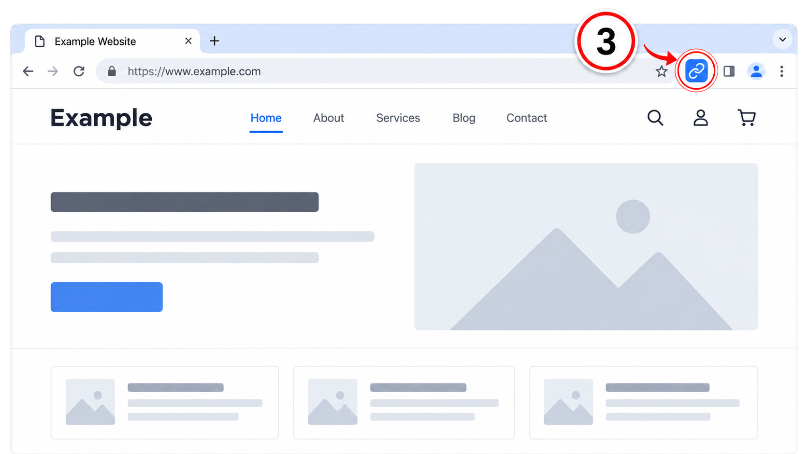

Backlink Monitoring Tool Installed
Click the puzzle piece (1) in Chrome's toolbar. Then click the pin (2) next to Backlink Monitoring Tool.

On any webpage, click the Backlink Monitoring Tool icon (3) in Chrome's toolbar to open the extension.
